源码安装
1.下载
# 以 1.21.6(2022 年版)演示源码安装全流程,新版本流程一致;2026 年现值机版本为 1.31.x(mainline)/1.30.x(stable),见文末「Nginx 安装更新」
wget https://nginx.org/download/nginx-1.21.6.tar.gz
tar -zxvf nginx-1.21.6.tar.gz
cd nginx-1.21.6源代码目录,如下图所示:
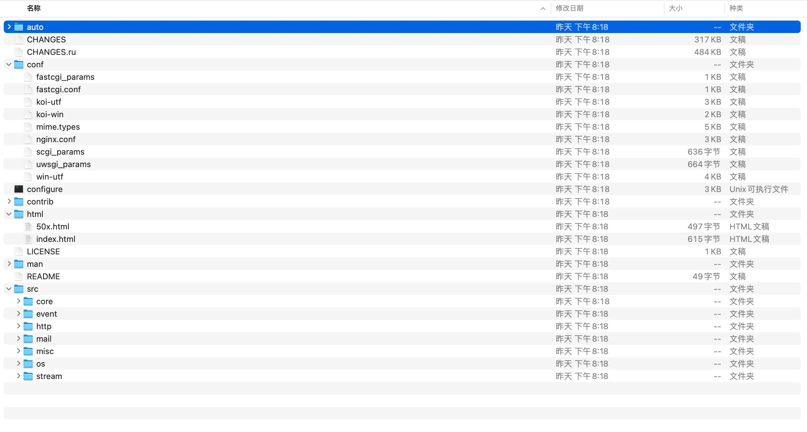
2. 配置
# prefix参数指定默认路径(安装，配置文件，日志目录, 临时目录等等)
# with-debug参数增加调试日志,正式运行强烈建议不要此参数
./configure --prefix=/Users/Shared/nginx --with-debug
# 更多参数及详细说明见 ./configure --help- 生成makefile文件,如下图所示:
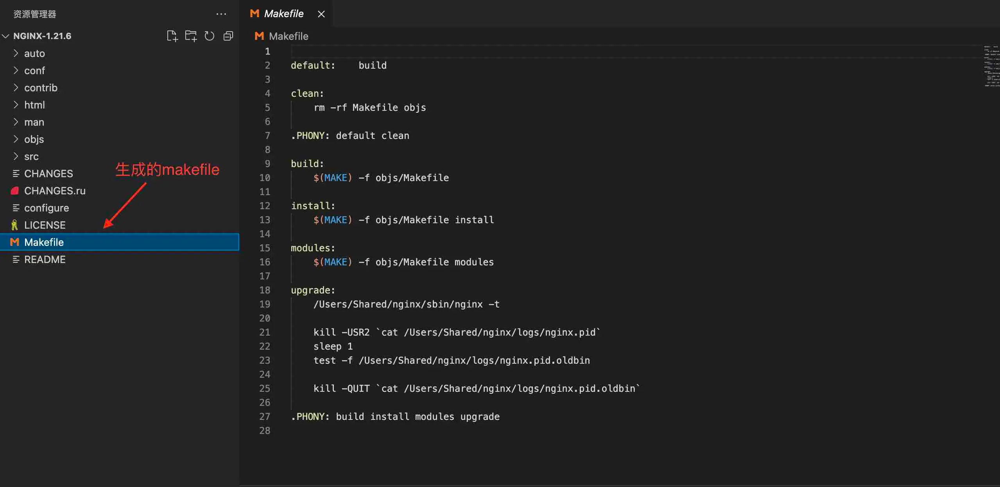
- 生成objs子目录,如下图所示
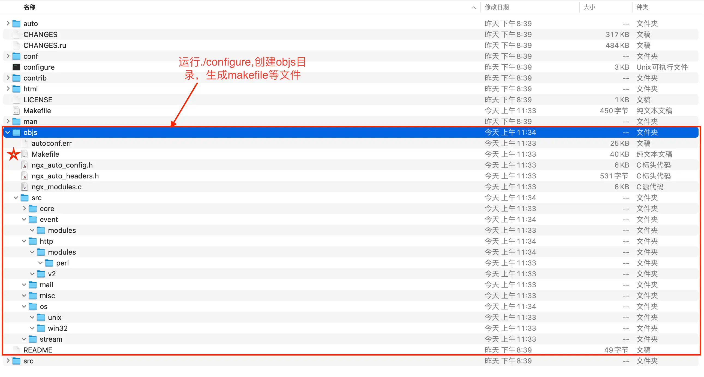
- 生成ngx_modules.c文件,如下图所示:
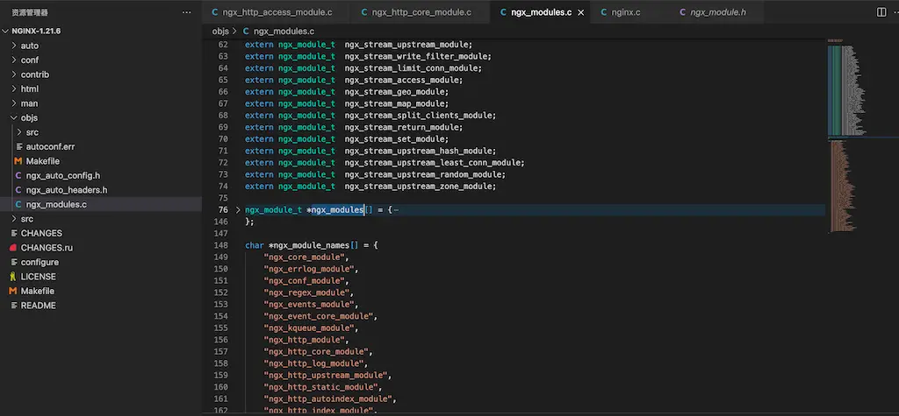
3. 编译
# 实际上执行上一步生成的objs/makefile
make- 生成启用模块目标文件,如下图所示:
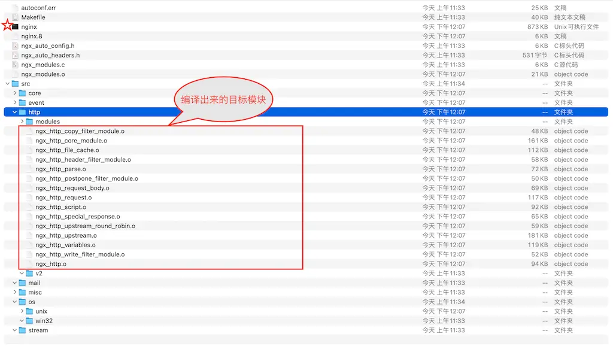
4. 安装
# 实际上执行上一步生成的objs/makefile
make install- 安装执行代码,如下所示:
install: build
test -d '$(DESTDIR)/Users/Shared/nginx' || mkdir -p '$(DESTDIR)/Users/Shared/nginx'
test -d '$(DESTDIR)/Users/Shared/nginx/sbin' \
|| mkdir -p '$(DESTDIR)/Users/Shared/nginx/sbin'
test ! -f '$(DESTDIR)/Users/Shared/nginx/sbin/nginx' \
|| mv '$(DESTDIR)/Users/Shared/nginx/sbin/nginx' \
'$(DESTDIR)/Users/Shared/nginx/sbin/nginx.old'
cp objs/nginx '$(DESTDIR)/Users/Shared/nginx/sbin/nginx'
test -d '$(DESTDIR)/Users/Shared/nginx/conf' \
|| mkdir -p '$(DESTDIR)/Users/Shared/nginx/conf'
....
test -d '$(DESTDIR)/Users/Shared/nginx/logs' \
|| mkdir -p '$(DESTDIR)/Users/Shared/nginx/logs'- 安装目录,如下图所示:
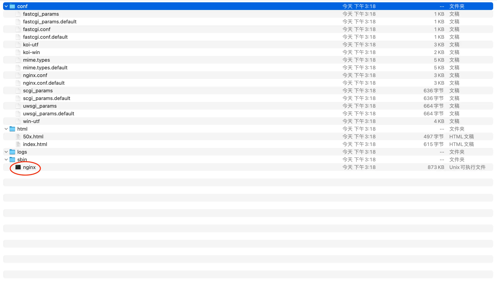
5.运行
# /Users/Shared/nginx为configure中prefix参数指定
cd /Users/Shared/nginx/sbin
# -t 表示检查配置文件是否正确
./nginx -t
./nginx- 日志目录,如下图所示:
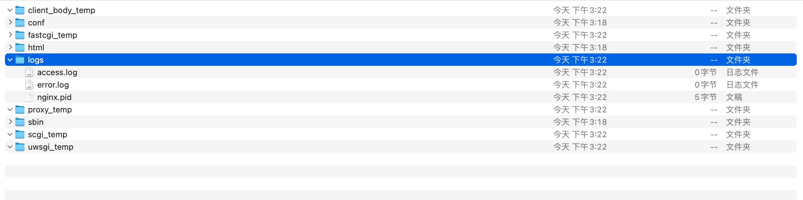
- 查看帮助,如下图所示:
./nginx -h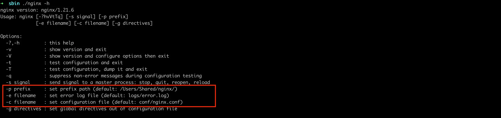
- 查看调试日志,如下图所示:
http {
...
server {
listen 80;
server_name localhost;
# 编译时需要带上--with-debug
# 如果仅看http过程,则指定等级为debug_http
error_log logs/error.log debug;
location / {
root html;
index index.html index.htm;
}
}
...
}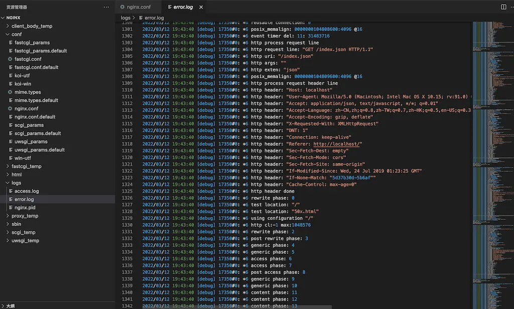
6. 进阶
1. 安装第三方模块及禁/启用自带模块
# ../nginx-party-module/echo-nginx-module是echo-nginx-module模块源代码目录
./configure \
--prefix=/Users/Shared/nginx \
--without-http_empty_gif_module \
--with-stream \
--add-module=../nginx-party-module/echo-nginx-module- –without参数禁用自带模块
- –with参数启用自带模块
- –add-module参数安装第三方模块
2. 编译安装
make && make install- make时在objs目录产生一个addon子目录,保存echo-nginx-module模块相关文件,如下图所示:
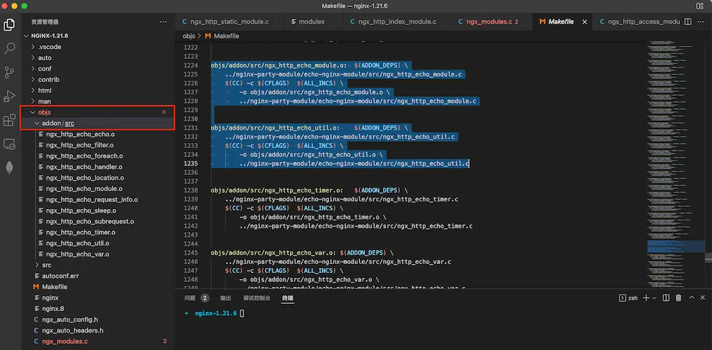
3. 编辑nginx.conf,运行
cd /Users/Shared/nginx/conf
vim nginx.conf
....
# echo-nginx-module模块详细见项目网址
location /hello {
echo "hello, world!";
}
...
cd ../sbin
./nginx4. 测试
curl http://localhost/hello
hello,world!5. 原理分析
-
configure脚本先引用auto目录下的options脚本,如下图所示:
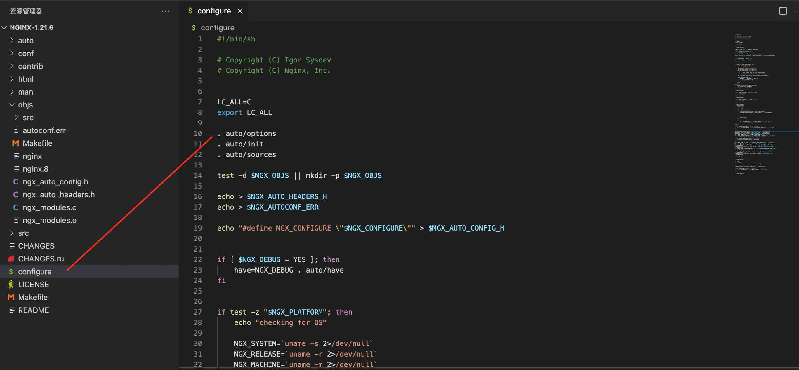
-
options脚本设参数默认值,如下图所示:
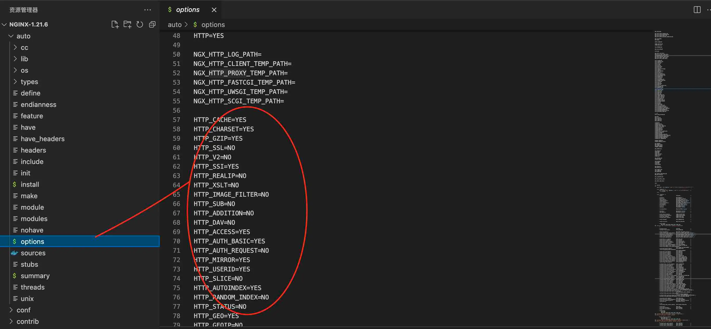
-
configure脚本再引用auto目录下的modules脚本,如下图所示:
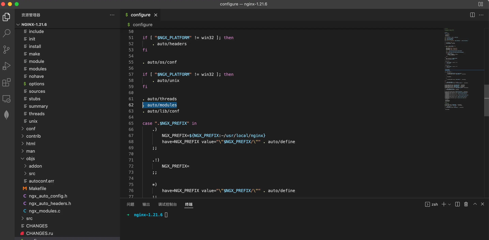
-
modules脚本如果参数为yes则引入编译,如下图所示:
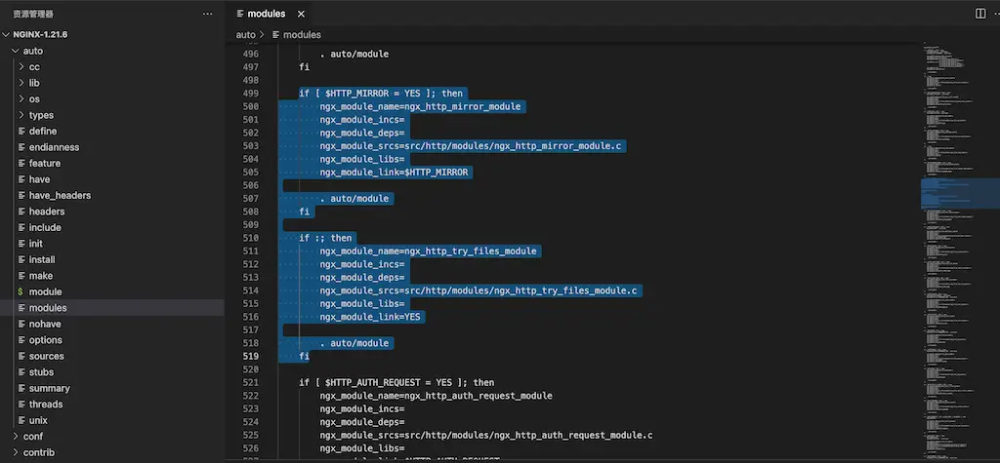
-
objs目录的ngx_modules.c文件就会增加引入的模块名,如下所示:
...
ngx_module_t *ngx_modules[] = {
&ngx_core_module,
&ngx_errlog_module,
&ngx_conf_module,
&ngx_regex_module,
&ngx_events_module,
&ngx_event_core_module,
&ngx_kqueue_module,
&ngx_http_module,
...
&ngx_stream_upstream_zone_module,
NULL
};
...-
ngx_modules.h的声明引用ngx_modules.c中ngx_modules,如下图所示:
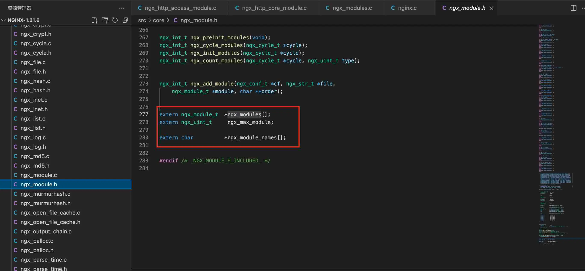
-
nginx.c的main函数调用nginx_module.c中ngx_preinit_modules函数,如下图所示:
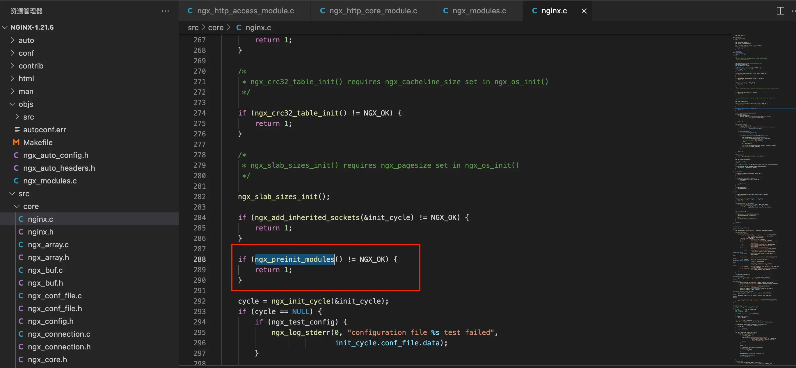
-
nginx_module.c中ngx_preinit_modules函数使用ngx_modules.c中ngx_modules,如下所示:
ngx_int_t
ngx_preinit_modules(void)
{
ngx_uint_t i;
/*
ngx_modules变量为ngx_modules.c中定义
*/
for (i = 0; ngx_modules[i]; i++) {
ngx_modules[i]->index = i;
ngx_modules[i]->name = ngx_module_names[i];
}
ngx_modules_n = i;
ngx_max_module = ngx_modules_n + NGX_MAX_DYNAMIC_MODULES;
return NGX_OK;
}- 动态配置和静态编译执行在此完美结合起来
7. 后记
-
这里有很多优秀的nginx第三方模块,可供下载使用
-
安装ssl
# openssl@1.1 已于 2023-09 EOL(Homebrew 已移除),2026 年改用 openssl@3
./configure --prefix=/Users/Shared/nginx \
--add-module=../nginx-party-module/ngx_http_redis-module \
--with-http_v2_module \
--with-http_ssl_module \
--with-openssl=/opt/homebrew/opt/openssl@3\
--with-debug- http_v2_module不一定需要ssl,浏览器一般强制需要
- http_ssl_module需要ssl目录,在linux一般指ssl-devel,需要include/lib目录
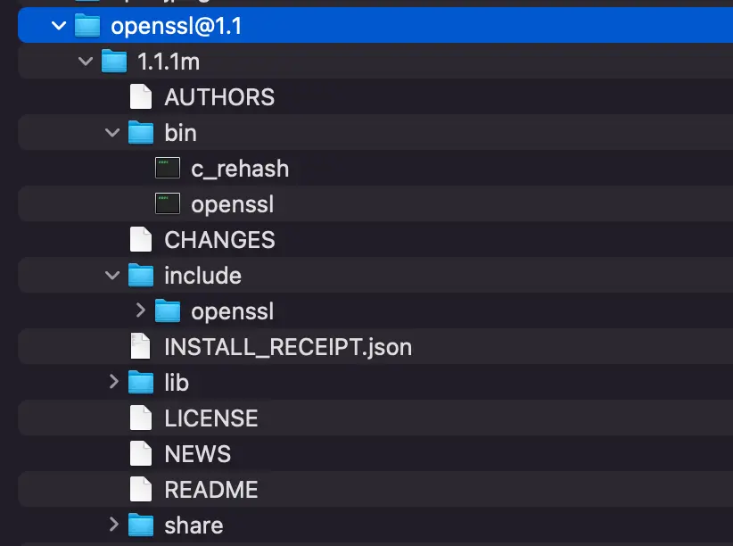
- 如果make仍然出错,移除掉路径中.openssl/,默认和系统中路径不同,多了一级.openssl/
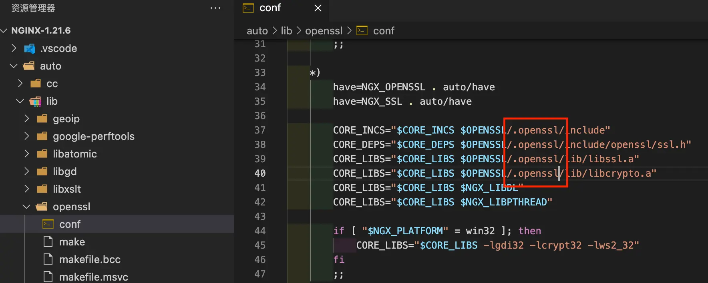
Nginx 安装更新（2026）：官方仓库与版本线
版本线选型：mainline vs stable
2026 年 nginx.org 官方仓库的版本线（单数=主线、双数=稳定，与官方约定一致）：
| 通道 | 版本 | 说明 |
|---|---|---|
| mainline（主线） | 1.31.x | 约 1-2 个月一版，含最新特性；官方默认推荐用于生产 |
| stable（稳定） | 1.30.x | 约一年一版或按需回溯关键修复；严格稳定性要求的选它 |
| 维护线 | 1.28.x | 旧稳定线，仅关键安全修复 |
官方明确建议：没有特殊稳定性约束时，生产环境直接使用 mainline；已上 stable 的按「偶数版本相邻升级」滚动即可。
官方 apt 仓库（2026）
官方仓库已覆盖 Ubuntu 22.04/24.04/26.04（resolute）、Debian 11/12/13（trixie）、RHEL 8/9/10、Alpine 3.21-3.24 等，全部支持 x86_64 与 aarch64/arm64。推荐做法（仓库地址已统一为 https）：
# Ubuntu/Debian - 官方仓库（https）
sudo apt install -y curl gnupg2 ca-certificates lsb-release ubuntu-keyring
curl -fsSL https://nginx.org/keys/nginx_signing.key | sudo gpg --dearmor -o /usr/share/keyrings/nginx-archive-keyring.gpg
echo "deb [signed-by=/usr/share/keyrings/nginx-archive-keyring.gpg] https://nginx.org/packages/ubuntu $(lsb_release -cs) nginx" | sudo tee /etc/apt/sources.list.d/nginx.list
# 让官方源优先于系统源
echo -e "Package: *\nPin: origin nginx.org\nPin-Priority: 900\n" | sudo tee /etc/apt/preferences.d/99nginx
sudo apt update && sudo apt install nginx
# 改用 mainline 通道（默认装的是 stable）
# 把上面 sources.list 里的 " nginx " 换成 " nginx/mainline "- 密钥指纹：2024 年起官方签名密钥更新，校验时匹配
573B FD6B 3D8F BC64 1079 A6AB ABF5 BD82 7BD9 BF62。 - 为何不用系统源：Ubuntu/Debian 自带 nginx 通常落后多个大版本且模块受限（如 Ubuntu 24.04 默认仍是 1.18 系）。
- 版本固定：需要锁版本时
apt list -a nginx查看可用版本，apt install nginx=<版本>后apt-mark hold nginx。
macOS 与 Docker
# macOS
brew install nginx
# Docker（官方镜像：1.31 mainline 标签）
docker run -d --name nginx -p 80:80 -p 443:443 -v ./nginx.conf:/etc/nginx/nginx.conf nginx:mainlineDocker 官方镜像的 nginx 标签默认指向 mainline；nginx:stable 是稳定线，按需选用。
HTTP/3：源码编译的官方姿势
官方 v3 模块（ngx_http_v3_module）是 OpenSSL 3.x + QUIC 的推荐路径；多数发行版包不含该模块，要启用 HTTP/3 需要自行从源码构建：
# 启用 HTTP/3 需要从源码编译（mainline 源码）
./configure --with-http_v3_module --with-http_ssl_module --with-debug
make && make install注意：--with-http_v3_module 依赖 OpenSSL 3.x（含 QUIC），构建前确认系统 OpenSSL 版本满足要求。